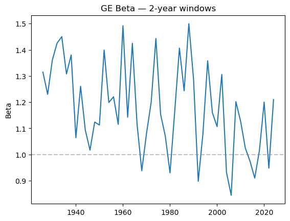
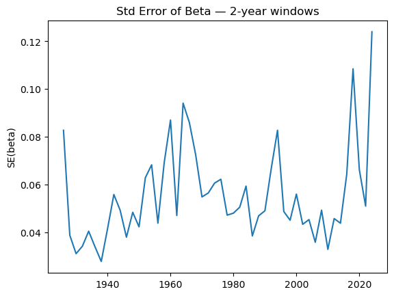
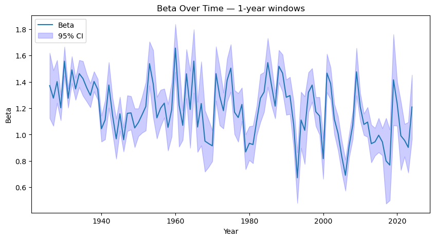
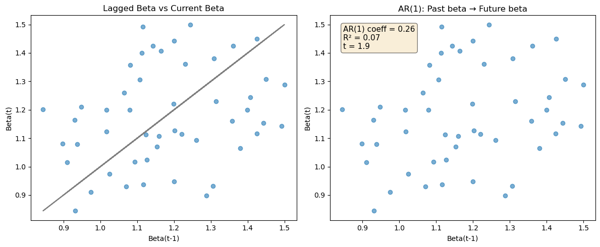
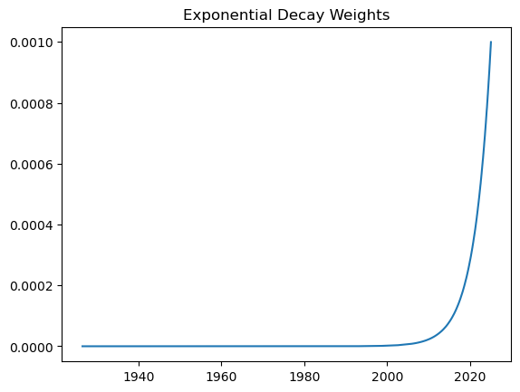
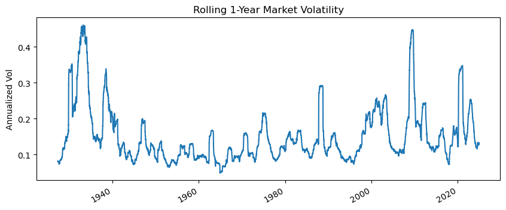
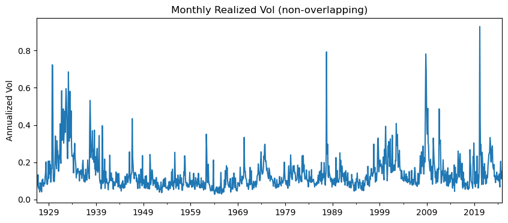
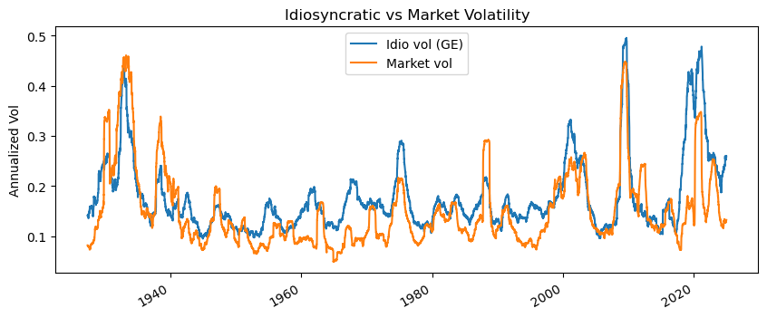
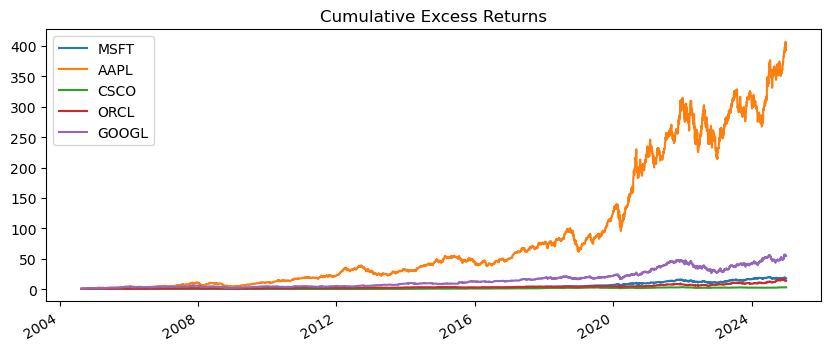
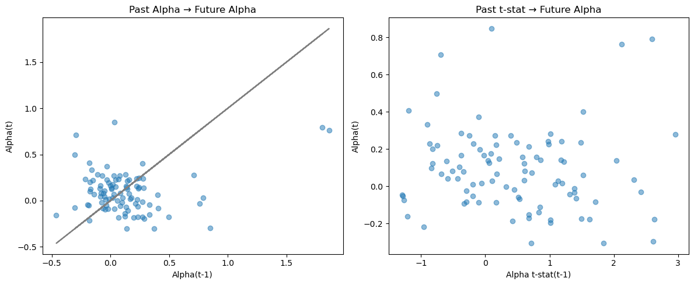

9. Estimation: From Historical Data to Future Dynamics#
“It is a capital mistake to theorize before one has data”
We estimate four objects, in order: betas → variances → factor risk premia → alpha
9.1. Learning Objectives#
Historical data is informative about the future — but only for some quantities
Factor models separate what data can estimate well from what it cannot
Betas and variances: estimable. Means: hard. Alpha: very hard.
This chapter is “stats” — but it is at the core of quant investing
# %pip install wrds # uncomment on first Colab run, then restart
# import wrds # uncomment after restart
import numpy as np
import pandas as pd
%matplotlib inline
import matplotlib.pyplot as plt
import pandas_datareader.data as DataReader
import statsmodels.api as sm
from scipy.stats import norm
# ── helper: pull daily returns from WRDS ──
def get_daily_wrds(conn, tickers=None):
permnos = conn.get_table(library='crsp', table='stocknames',
columns=['permno','ticker','namedt','nameenddt'])
permnos['nameenddt'] = pd.to_datetime(permnos['nameenddt'])
permnos = permnos[(permnos['ticker'].isin(tickers)) &
(permnos['nameenddt'] == permnos['nameenddt'].max())]
permno_list = permnos['permno'].unique().tolist()
query = f"""
SELECT permno, date, ret, retx, prc
FROM crsp.dsf
WHERE permno IN ({','.join(map(str, permno_list))})
ORDER BY date, permno
"""
df = conn.raw_sql(query, date_cols=['date'])
df = df.merge(permnos[['permno','ticker']], on='permno', how='left')
df = df.pivot(index='date', columns='ticker', values='ret')[tickers]
return df
# ── helper: Fama-French factors ──
def get_factors(factors='CAPM'):
if factors == 'CAPM':
d = DataReader.DataReader("F-F_Research_Data_Factors_daily","famafrench",start="1921-01-01")[0]
cols = ['RF','Mkt-RF']
elif factors == 'FF3':
d = DataReader.DataReader("F-F_Research_Data_Factors_daily","famafrench",start="1921-01-01")[0]
cols = ['RF','Mkt-RF','SMB','HML']
elif factors == 'FF5':
d = DataReader.DataReader("F-F_Research_Data_5_Factors_2x3_daily","famafrench",start="1921-01-01")[0]
cols = ['RF','Mkt-RF','SMB','HML','RMW','CMA']
else:
d = DataReader.DataReader("F-F_Research_Data_5_Factors_2x3_daily","famafrench",start="1921-01-01")[0]
cols = ['RF','Mkt-RF','SMB','HML','RMW','CMA']
mom = DataReader.DataReader("F-F_Momentum_Factor_daily","famafrench",start="1921-01-01")[0]
d = d.merge(mom, on='Date')
d.index = pd.to_datetime(d.index)
return d[cols] / 100
9.2. Factor Model Recap#
Realized returns: \(\; r = r_f + \alpha + \beta\,(f - r_f) + \varepsilon\)
Expected excess returns: \(\; E[r^e] = \alpha + \beta \cdot E[f]\)
Variance: \(\; \text{Var}(r) = \beta^2\,\text{Var}(f) + \text{Var}(\varepsilon)\)
Parameter |
Source |
|---|---|
Risk-free rate \(r_f\) |
Observed directly (bond markets) |
Beta \(\beta\) |
Estimated from historical co-movement |
Factor premium \(E[f]\) |
Estimated from long historical averages |
Alpha \(\alpha\) |
Not reliably estimated — requires judgment |
Factor & idio variance |
Estimated from historical returns |
9.3. What Problem Are We Solving?#
Do we care how a stock behaved in the past? No.
We care about historical data only when it helps predict what happens next
Some quantities are stable enough that the past is informative (betas, variances)
Others are not (alpha)
Factor models help us separate the two
We discuss each estimation problem one-by-one: betas → variances → premia → alpha
9.4. Betas (Factor Loadings)#
Beta = forward-looking co-movement between an asset and the factor:
\(\beta = 1\): moves one-for-one with the factor
\(\beta = 2\): market drops 1% → stock drops 2%
Subscript \(t\): conditional on today’s information (no crystal ball)
9.4.1. Data: GE excess returns vs the market#
# ── Load pre-saved data (or uncomment WRDS block) ──
# conn = wrds.Connection()
# tickers = ['GE']
# df = get_daily_wrds(conn, tickers)
# df.to_csv('../../assets/data/FactorModelsEstimation_data1.csv')
df = pd.read_csv('https://raw.githubusercontent.com/amoreira2/UG54/refs/heads/main/assets/data/FactorModelsEstimation_data1.csv')
df.date = pd.to_datetime(df.date)
df.set_index('date', inplace=True)
df_factor = get_factors()
df, df_factor = df.dropna().align(df_factor.dropna(), join='inner', axis=0)
tickers = ['GE']
df_re = df[tickers].sub(df_factor['RF'], axis=0)
display(df_re.head())
display(df_re.tail())
/var/folders/ft/hpl8ntq506jgz116vbqnwqj40000gp/T/ipykernel_70085/1804141976.py:34: FutureWarning: The argument 'date_parser' is deprecated and will be removed in a future version. Please use 'date_format' instead, or read your data in as 'object' dtype and then call 'to_datetime'.
d = DataReader.DataReader("F-F_Research_Data_Factors_daily","famafrench",start="1921-01-01")[0]
| GE | |
|---|---|
| 1926-07-01 | -0.000100 |
| 1926-07-02 | -0.000100 |
| 1926-07-06 | 0.007210 |
| 1926-07-07 | -0.000100 |
| 1926-07-08 | 0.004254 |
| GE | |
|---|---|
| 2024-12-24 | 0.014414 |
| 2024-12-26 | 0.003649 |
| 2024-12-27 | -0.010598 |
| 2024-12-30 | -0.011842 |
| 2024-12-31 | -0.007993 |
9.4.2. Estimating Beta: OLS Regression#
Regress excess returns on the factor — the slope is \(\beta\)
Look-back window matters: too long → stale; too short → noisy
Rule of thumb: 1–2 years of daily data for individual stocks
For illiquid stocks use weekly/monthly with longer windows (e.g., 5 years monthly)
X = sm.add_constant(df_factor['Mkt-RF'])
y = df_re['GE']
model = sm.OLS(y, X).fit()
display(model.summary())
| Dep. Variable: | GE | R-squared: | 0.546 |
|---|---|---|---|
| Model: | OLS | Adj. R-squared: | 0.546 |
| Method: | Least Squares | F-statistic: | 3.119e+04 |
| Date: | Mon, 02 Mar 2026 | Prob (F-statistic): | 0.00 |
| Time: | 09:25:58 | Log-Likelihood: | 77611. |
| No. Observations: | 25898 | AIC: | -1.552e+05 |
| Df Residuals: | 25896 | BIC: | -1.552e+05 |
| Df Model: | 1 | ||
| Covariance Type: | nonrobust |
| coef | std err | t | P>|t| | [0.025 | 0.975] | |
|---|---|---|---|---|---|---|
| const | 2.608e-05 | 7.51e-05 | 0.347 | 0.728 | -0.000 | 0.000 |
| Mkt-RF | 1.2317 | 0.007 | 176.613 | 0.000 | 1.218 | 1.245 |
| Omnibus: | 5521.912 | Durbin-Watson: | 2.092 |
|---|---|---|---|
| Prob(Omnibus): | 0.000 | Jarque-Bera (JB): | 136800.865 |
| Skew: | 0.426 | Prob(JB): | 0.00 |
| Kurtosis: | 14.227 | Cond. No. | 92.9 |
Notes:
[1] Standard Errors assume that the covariance matrix of the errors is correctly specified.
9.4.3. Question G1#
Complete the code below and be prepared to answer the questions.
#1. How well is estimated? Recover the standard error
print(model.__)
#2. Given this, how well it is estimated?
#3. Based on this how confident we are that the beta is more than 1? (qualitative)
#4. How much uncertainty do we have about it? 95% confidence interval?
print([model.__['Mkt-RF'] + 1.96*model.__['Mkt-RF'],
model.__['Mkt-RF'] - 1.96*model.__['Mkt-RF']])
#5. How do I adjust the t-statistic to test if beta is greater than 1?
tstat = (model.__['Mkt-RF'] - __) / model.__['Mkt-RF']
print(tstat)
#6. Probability that beta > 1? And < 1?
probmorethan1 = __ - norm.__(tstat)
print(probmorethan1)
9.4.4. Betas Change Over Time#
Almost always above 1, but all over the place
Are these real shifts, or just estimation noise?
What does the spike around 2008–09 tell us?
# Merge factor and excess returns
df_m = df_factor.copy()
df_m['re'] = df_re['GE']
def regression_beta(df):
X = sm.add_constant(df['Mkt-RF'])
y = df['re']
return sm.OLS(y, X).fit(dropna=True).params['Mkt-RF']
df_m.groupby((df_m.index.year // 2) * 2).apply(regression_beta).plot(
title='GE Beta — 2-year windows')
plt.ylabel('Beta')
plt.axhline(1, color='grey', linestyle='--', alpha=0.5)
plt.show()

9.4.5. Uncertainty Around Beta Estimates#
Point estimates bounce around — but how much is real vs noise?
Standard errors tell us: given this data window, what range of \(\beta\) is consistent?
But we need \(\beta\) for next period — within-sample precision ≠ out-of-sample accuracy
# Standard errors per 2-year window
se = df_m.groupby((df_m.index.year // 2) * 2).apply(
lambda x: sm.OLS(x['re'], sm.add_constant(x['Mkt-RF'])).fit().bse['Mkt-RF'])
se.plot(title='Std Error of Beta — 2-year windows')
plt.ylabel('SE(beta)')
plt.show()

9.4.6. Confidence Intervals#
\(\text{95\% CI} = \hat\beta \pm 1.96 \times \text{SE}\)
Question G2: How do you turn this into a function that takes (a) window length and (b) CI level as inputs?
y_win = 1 # change to 2, 5, 10 to see the effect
grp = (df_m.index.year // y_win) * y_win
se = grp.map(df_m.groupby(grp).apply(
lambda x: sm.OLS(x['re'], sm.add_constant(x['Mkt-RF'])).fit().bse['Mkt-RF']))
e = grp.map(df_m.groupby(grp).apply(
lambda x: sm.OLS(x['re'], sm.add_constant(x['Mkt-RF'])).fit().params['Mkt-RF']))
# deduplicate to one point per window
e_plot = df_m.groupby(grp).apply(lambda x: sm.OLS(x['re'], sm.add_constant(x['Mkt-RF'])).fit().params['Mkt-RF'])
se_plot = df_m.groupby(grp).apply(lambda x: sm.OLS(x['re'], sm.add_constant(x['Mkt-RF'])).fit().bse['Mkt-RF'])
plt.figure(figsize=(10, 5))
plt.plot(e_plot.index, e_plot, label='Beta')
plt.fill_between(e_plot.index, e_plot - 1.96*se_plot, e_plot + 1.96*se_plot,
color='b', alpha=0.2, label='95% CI')
plt.xlabel('Year'); plt.ylabel('Beta')
plt.title(f'Beta Over Time — {y_win}-year windows')
plt.legend(); plt.show()

9.4.7. Beta Is a Forecasting Problem#
In-sample CIs tell you about this window’s beta
But you need beta for next period
So: does past beta predict future beta?
e = df_m.groupby((df_m.index.year // 2) * 2).apply(regression_beta)
fig, axes = plt.subplots(1, 2, figsize=(12, 5))
# scatter: lagged vs current
axes[0].scatter(e.shift(1), e, alpha=0.6)
axes[0].plot(e.shift(1), e.shift(1), '-', color='grey')
axes[0].set_xlabel('Beta(t-1)'); axes[0].set_ylabel('Beta(t)')
axes[0].set_title('Lagged Beta vs Current Beta')
# AR(1) regression
reg = sm.OLS(e[1:], sm.add_constant(e.shift(1)[1:])).fit()
axes[1].text(0.05, 0.95, f"AR(1) coeff = {reg.params.iloc[1]:.2f}\n"
f"R² = {reg.rsquared:.2f}\nt = {reg.tvalues.iloc[1]:.1f}",
transform=axes[1].transAxes, va='top', fontsize=11,
bbox=dict(boxstyle='round', facecolor='wheat', alpha=0.5))
axes[1].scatter(e.shift(1), e, alpha=0.6)
axes[1].set_xlabel('Beta(t-1)'); axes[1].set_ylabel('Beta(t)')
axes[1].set_title('AR(1): Past beta → Future beta')
plt.tight_layout(); plt.show()

9.4.8. Alternative: Exponential Decay Weighting#
Instead of a hard window, put smoothly declining weights on older data:
Run WLS instead of OLS — recent observations count more.
X = sm.add_constant(df_m['Mkt-RF'])
y = df_m['re']
n = len(y)
decay_rate = 0.001
weights = np.exp(-decay_rate * np.arange(n)[::-1])
weights /= weights.sum()
plt.plot(df_m.index, weights)
plt.title('Exponential Decay Weights'); plt.show()
results = sm.WLS(y, X, weights=weights).fit()
display(results.summary())

| Dep. Variable: | re | R-squared: | 0.332 |
|---|---|---|---|
| Model: | WLS | Adj. R-squared: | 0.332 |
| Method: | Least Squares | F-statistic: | 1.285e+04 |
| Date: | Mon, 02 Mar 2026 | Prob (F-statistic): | 0.00 |
| Time: | 09:26:18 | Log-Likelihood: | -57752. |
| No. Observations: | 25898 | AIC: | 1.155e+05 |
| Df Residuals: | 25896 | BIC: | 1.155e+05 |
| Df Model: | 1 | ||
| Covariance Type: | nonrobust |
| coef | std err | t | P>|t| | [0.025 | 0.975] | |
|---|---|---|---|---|---|---|
| const | 0.0003 | 0.000 | 3.007 | 0.003 | 0.000 | 0.001 |
| Mkt-RF | 1.0792 | 0.010 | 113.372 | 0.000 | 1.061 | 1.098 |
| Omnibus: | 14270.716 | Durbin-Watson: | 2.053 |
|---|---|---|---|
| Prob(Omnibus): | 0.000 | Jarque-Bera (JB): | 9012959.432 |
| Skew: | 1.276 | Prob(JB): | 0.00 |
| Kurtosis: | 94.356 | Cond. No. | 86.7 |
Notes:
[1] Standard Errors assume that the covariance matrix of the errors is correctly specified.
9.5. Variances#
Two flavors: factor variance and idiosyncratic variance
Both cluster at high frequency (days → months)
For horizons > 1 year, long-run averages suffice
For horizons < 1 month, you need high-frequency models
Average market vol ≈ 17%/year — but peak crisis vol can be 3× higher
print(f"Full-sample annualized market vol: {df_m['Mkt-RF'].std()*252**0.5:.1%}")
fig, ax = plt.subplots(figsize=(10, 4))
(df_m['Mkt-RF'].rolling(252).std() * 252**0.5).plot(ax=ax)
ax.set_ylabel('Annualized Vol'); ax.set_title('Rolling 1-Year Market Volatility')
plt.show()
Full-sample annualized market vol: 17.1%

9.5.1. Realized Variance#
Rob Engle won the Nobel Prize for models that forecast volatility (ARCH/GARCH).
We use a simpler approach: monthly realized variance from daily data:
Non-overlapping — no artificial smoothness from shared data.
df_var = df_m.groupby(df_m.index + pd.offsets.MonthEnd(0)).apply(
lambda x: x['Mkt-RF'].var() * 252)
fig, ax = plt.subplots(figsize=(10, 4))
(df_var**0.5).plot(ax=ax)
ax.set_ylabel('Annualized Vol'); ax.set_title('Monthly Realized Vol (non-overlapping)')
plt.show()

9.5.2. Forecasting Realized Variance#
Volatility is persistent — past vol predicts future vol.
Simple AR(1): \(\; RV_{t+1} = a + b\,RV_t + \varepsilon_{t+1}\)
df_var_lag = df_var.shift(1)
X = sm.add_constant(df_var_lag[1:])
y = df_var[1:]
model_rv = sm.OLS(y, X).fit()
print(model_rv.summary())
OLS Regression Results
==============================================================================
Dep. Variable: y R-squared: 0.291
Model: OLS Adj. R-squared: 0.290
Method: Least Squares F-statistic: 483.1
Date: Mon, 02 Mar 2026 Prob (F-statistic): 5.18e-90
Time: 09:26:28 Log-Likelihood: 1878.6
No. Observations: 1181 AIC: -3753.
Df Residuals: 1179 BIC: -3743.
Df Model: 1
Covariance Type: nonrobust
==============================================================================
coef std err t P>|t| [0.025 0.975]
------------------------------------------------------------------------------
const 0.0132 0.002 8.266 0.000 0.010 0.016
0 0.5391 0.025 21.979 0.000 0.491 0.587
==============================================================================
Omnibus: 1662.260 Durbin-Watson: 2.053
Prob(Omnibus): 0.000 Jarque-Bera (JB): 536252.362
Skew: 7.764 Prob(JB): 0.00
Kurtosis: 106.230 Cond. No. 17.1
==============================================================================
Notes:
[1] Standard Errors assume that the covariance matrix of the errors is correctly specified.
9.5.3. VIX: The Market’s Variance Forecast#
The VIX is derived from S&P 500 option prices
It equals the risk-neutral expectation of next-30-day variance
If your own variance forecast < VIX² → sell variance (or buy stocks)
If your own forecast > VIX² → buy variance (or reduce exposure)
Does VIX subsume past realized variance?
vix = DataReader.DataReader("VIXCLS", "fred",
start=df_var.index.min(), end=df_var.index.max())
vix = vix.resample('M').last()
df_vv = df_var.to_frame('rv').join((vix/100)**2, how='inner')
df_vv['VIX_lag'] = df_vv['VIXCLS'].shift(1)
df_vv['rv_lag'] = df_vv['rv'].shift(1)
df_vv = df_vv.dropna()
model_vix = sm.OLS(df_vv['rv'], sm.add_constant(df_vv[['rv_lag','VIX_lag']])).fit()
print(model_vix.summary())
OLS Regression Results
==============================================================================
Dep. Variable: rv R-squared: 0.380
Model: OLS Adj. R-squared: 0.377
Method: Least Squares F-statistic: 127.6
Date: Mon, 02 Mar 2026 Prob (F-statistic): 6.28e-44
Time: 09:26:48 Log-Likelihood: 653.79
No. Observations: 419 AIC: -1302.
Df Residuals: 416 BIC: -1289.
Df Model: 2
Covariance Type: nonrobust
==============================================================================
coef std err t P>|t| [0.025 0.975]
------------------------------------------------------------------------------
const -0.0089 0.004 -2.229 0.026 -0.017 -0.001
rv_lag 0.0552 0.065 0.851 0.395 -0.072 0.183
VIX_lag 0.9155 0.104 8.814 0.000 0.711 1.120
==============================================================================
Omnibus: 673.776 Durbin-Watson: 1.740
Prob(Omnibus): 0.000 Jarque-Bera (JB): 224215.797
Skew: 8.940 Prob(JB): 0.00
Kurtosis: 114.907 Cond. No. 47.3
==============================================================================
Notes:
[1] Standard Errors assume that the covariance matrix of the errors is correctly specified.
/var/folders/ft/hpl8ntq506jgz116vbqnwqj40000gp/T/ipykernel_70085/3078549407.py:3: FutureWarning: 'M' is deprecated and will be removed in a future version, please use 'ME' instead.
vix = vix.resample('M').last()
9.5.4. Idiosyncratic Volatility#
\(\varepsilon = r^e - (\alpha + \beta f)\) → \(\text{Var}(\varepsilon) = \text{Var}(r^e - \beta f)\)
Depends on your beta estimate. Here we fix \(\beta\) at the full-sample value.
df_m = df_m.dropna()
model_full = sm.OLS(df_m['re'], sm.add_constant(df_m['Mkt-RF'])).fit(dropna=True)
df_m['e'] = model_full.resid
fig, ax = plt.subplots(figsize=(10, 4))
(df_m['e'].rolling(252).std() * 252**0.5).plot(ax=ax, label='Idio vol (GE)')
(df_m['Mkt-RF'].rolling(252).std() * 252**0.5).plot(ax=ax, label='Market vol')
ax.legend(); ax.set_ylabel('Annualized Vol')
ax.set_title('Idiosyncratic vs Market Volatility')
plt.show()

9.5.5. Question G3#
How would you estimate idio vol using the Realized Variance (non-overlapping) approach?
What model(s) would you try to forecast idio vol? Be concrete.
9.6. Expected Returns#
Three pieces:
Risk-free rate — observed directly in bond markets
Factor risk premia — stable, estimated from long samples
Alpha — transient, cannot be reliably estimated from data
9.6.1. Factor Risk Premia#
Compensation for systematic risk — doesn’t vanish because investors know about it
More stable than alpha → comfortable using long samples
Best estimate (if constant): sample mean of the longest available history
mu = df_m['Mkt-RF'].mean() * 252
sig = df_m['Mkt-RF'].std() * 252**0.5
T = len(df_m) / 252
se = sig / T**0.5
print(f"Market premium: {mu:.1%}")
print(f"Market vol: {sig:.1%}")
print(f"SE of mean: {se:.1%}")
print(f"t-stat (H0=0): {mu/se:.2f}")
Market premium: 7.7%
Market vol: 17.1%
SE of mean: 1.7%
t-stat (H0=0): 4.58
9.6.2. “Only Time Will Tell”#
Sampling more frequently does not improve precision of expected return estimates.
Both mean and variance scale with frequency — the ratio stays the same.
\(\text{SE} = \sigma / \sqrt{T}\) depends on calendar time \(T\), not number of observations.
nullh = 0.03
t = (mu - nullh) / se
p = (1 - norm.cdf(t)) * 100
print(f"t-stat (H0 = {nullh:.0%}): {t:.2f}")
print(f"Prob market premium < {nullh:.0%}: {p:.1f}%")
t-stat (H0 = 3%): 2.80
Prob market premium < 3%: 0.3%
9.6.4. Question G4#
What does ~13 years imply for someone opening a hedge fund? Think about the investor’s problem.
Why does this make high-SR strategies extra valuable for pod shops?
9.6.6. Forecasting Market Returns — Literature#
Many signals have been tried:
Past volatility (doesn’t work)
Dividend yield, earnings yield (maybe, unreliable)
Variance risk premium (VIX minus past vol — works somewhat, short sample)
Share issuance
All boil down to: \(\; r_{t+1} = a + b\,X_t + \varepsilon_{t+1}\)
It is very tricky business. We return to this in the timing lecture.
9.7. Alpha: The Holy Grail#
Alpha is the expected return of the hedged portfolio
Unlike factor premia, alpha is transient: everyone chases it, so it disappears
You cannot reliably estimate it from data — you need an edge
# ── Load multi-stock data ──
# conn = wrds.Connection()
# tickers = ['MSFT','AAPL','CSCO','ORCL','GOOGL']
# df = get_daily_wrds(conn, tickers).dropna()
# df.to_csv('../../assets/data/FactorModelsEstimation_data2.csv')
df = pd.read_csv('https://raw.githubusercontent.com/amoreira2/UG54/refs/heads/main/assets/data/FactorModelsEstimation_data2.csv')
df.date = pd.to_datetime(df.date)
df.set_index('date', inplace=True)
df_factor = get_factors()
df, df_factor = df.align(df_factor, join='inner', axis=0)
df_re = df.subtract(df_factor['RF'], axis=0)
(1 + df_re).cumprod().plot(title='Cumulative Excess Returns', figsize=(10, 4))
plt.show()
/var/folders/ft/hpl8ntq506jgz116vbqnwqj40000gp/T/ipykernel_70085/1804141976.py:34: FutureWarning: The argument 'date_parser' is deprecated and will be removed in a future version. Please use 'date_format' instead, or read your data in as 'object' dtype and then call 'to_datetime'.
d = DataReader.DataReader("F-F_Research_Data_Factors_daily","famafrench",start="1921-01-01")[0]

9.7.1. Estimating Alpha Across Stocks#
Estimate \(\alpha\) in 1-year windows for each stock
Then ask: does past \(\alpha\) predict future \(\alpha\)?
period_length = 1
results_dict = {'Ticker': [], 'Period': [], 'Alpha': [], 'Alpha_SE': [], 'Alpha_Tstat': []}
for start_year in range(df_re.index.year.min(), df_re.index.year.max(), period_length):
end_year = start_year + period_length - 1
mask = (df_re.index.year >= start_year) & (df_re.index.year <= end_year)
df_re_p = df_re[mask]
df_fac_p = df_factor[mask]
for ticker in df_re.columns:
try:
y = df_re_p[ticker]
X = sm.add_constant(df_fac_p['Mkt-RF'])
m = sm.OLS(y, X, missing='drop').fit()
results_dict['Ticker'].append(ticker)
results_dict['Period'].append(end_year)
results_dict['Alpha'].append(m.params['const'] * 252)
results_dict['Alpha_SE'].append(m.bse['const'] * 252)
results_dict['Alpha_Tstat'].append(m.params['const'] / m.bse['const'])
except:
pass
results_df = pd.DataFrame(results_dict)
print(results_df)
Ticker Period Alpha Alpha_SE Alpha_Tstat
0 MSFT 2004 -0.034329 0.173273 -0.198122
1 AAPL 2004 1.804751 0.695194 2.596038
2 CSCO 2004 -0.462225 0.381393 -1.211939
3 ORCL 2004 0.330323 0.490510 0.673428
4 GOOGL 2004 1.865736 0.880351 2.119310
.. ... ... ... ... ...
95 MSFT 2023 0.229256 0.204967 1.118501
96 AAPL 2023 0.166097 0.146679 1.132379
97 CSCO 2023 -0.082666 0.180093 -0.459018
98 ORCL 2023 0.073373 0.273334 0.268438
99 GOOGL 2023 0.201091 0.248714 0.808525
[100 rows x 5 columns]
9.7.2. Question G5#
The naive results_df.shift(1) shifts across rows regardless of ticker — wrong!
How do you fix the shift so it happens within each ticker?
fig, axes = plt.subplots(1, 2, figsize=(12, 5))
axes[0].plot(results_df.groupby('Ticker').shift(1)['Alpha'], results_df['Alpha'], 'o', alpha=0.5)
axes[0].plot(results_df['Alpha'], results_df['Alpha'], '-', color='grey')
axes[0].set_xlabel('Alpha(t-1)'); axes[0].set_ylabel('Alpha(t)')
axes[0].set_title('Past Alpha → Future Alpha')
axes[1].plot(results_df.groupby('Ticker').shift(1)['Alpha_Tstat'], results_df['Alpha'], 'o', alpha=0.5)
axes[1].set_xlabel('Alpha t-stat(t-1)'); axes[1].set_ylabel('Alpha(t)')
axes[1].set_title('Past t-stat → Future Alpha')
plt.tight_layout(); plt.show()

9.7.3. Alpha Is Transient#
No predictive relationship — past alpha ≠ future alpha
Even high t-stats don’t predict higher future alpha
Not surprising: everyone chases alpha, so it gets competed away quickly
A crowded trade can yield negative alpha even if the original idea was right
9.7.4. If Not Estimation, Then What?#
You need to think. Three main edges:
1. Valuation
Deep understanding of a business the market is mispricing
Buffett, Einhorn (bet against Lehman)
Edge = superior business judgment + knowing why the opportunity exists
2. Liquidity provision
Forced sellers (fund outflows, index drops, credit downgrades) create reversals
You take the other side — providing liquidity at a premium
Edge = understanding that the price move is not about fundamentals
3. Proprietary data
Satellite imagery of retail parking lots → predict sales
Flow data, supply-chain data, weather data
Edge = information that others don’t yet have
9.7.5. Quantifying Alpha#
Put all views on a common horizon (e.g., monthly):
Example: You think NVDA (at $1000) will be at $800 in one year (−20%).
Uniform timing: monthly \(\alpha = (0.8)^{1/12} - 1 \approx -1.8\%\)
Known timing (last 2 earnings): \(\alpha = 0\) for 6 months, then \((0.8)^{1/6} - 1 \approx -3.6\%\)
Important: real alpha is specific — not a disguised macro bet.
Bullish on tech? Buy the sector, not a single stock.
Know exactly what your trade is and what risks you’re exposed to.
9.8. Key Takeaways#
What |
Estimable? |
How |
|---|---|---|
Beta |
Yes |
1–2 yr daily regression; past \(\beta\) predicts future \(\beta\) |
Variance |
Yes |
Rolling / realized variance; very persistent |
Factor premia |
Slowly |
Long samples; precision grows only with calendar time |
Alpha |
No |
Cannot be reliably estimated — requires an edge |
Express alpha views at a consistent horizon before sizing positions
Know your edge: valuation, liquidity provision, or proprietary data
9.9. Appendix: The Normal Distribution#
Not required for factor estimation, but useful for statistical tests
Reasonable approximation at monthly/annual frequency
Key facts for a standard normal \(z\):
68% of draws within \(\pm 1\sigma\)
95% within \(\pm 2\sigma\)
Standardization: \(z = (x - \mu) / \sigma\)
# quantile → z-score
print(f"95th percentile z-score: {norm.ppf(0.95):.3f}")
# z-score → probability
print(f"CDF at z=1.645: {norm.cdf(1.645):.4f}")